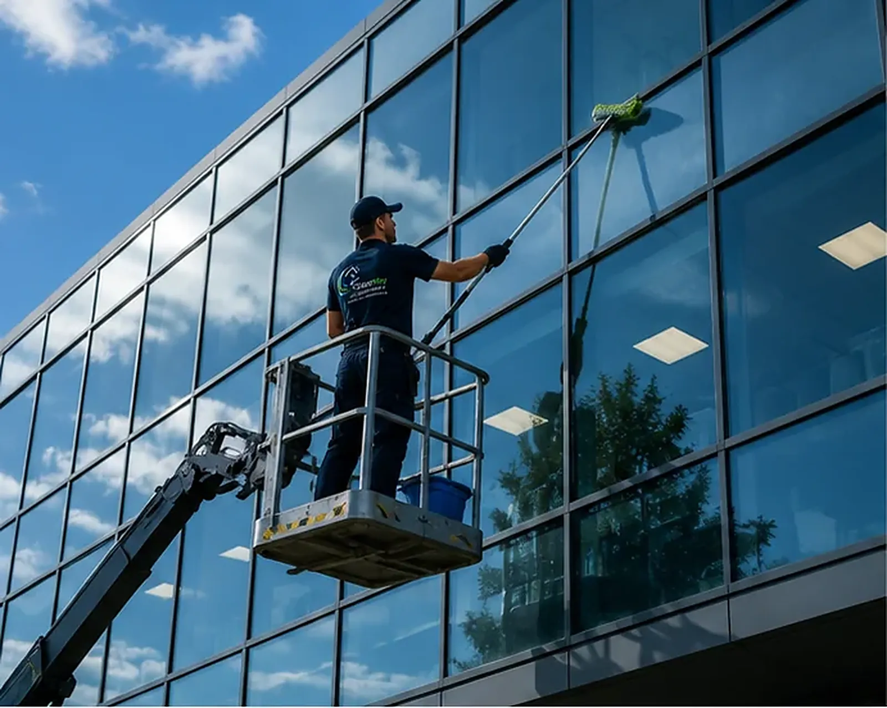
Fenster- & Glasreinigung
Streifenfreie Fenster, Schaufenster und Glasfassaden – innen, außen und auch in schwer erreichbaren Höhen.
Zur Fenster- & Glasreinigung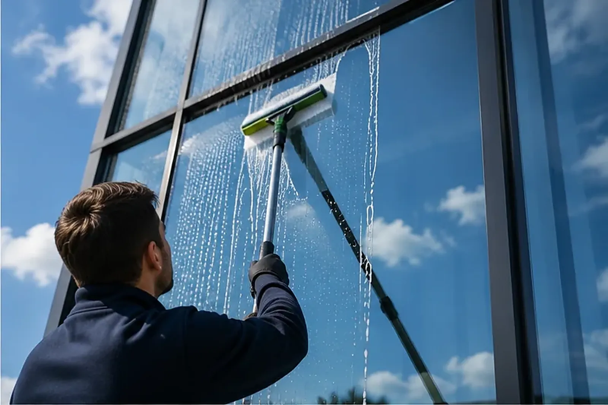
Gebäudeservice in Ludwigsburg
ClearWay übernimmt professionelle Reinigungs- und Pflegearbeiten für Wohnanlagen, Gewerbe und private Immobilien – vom streifenfreien Fenster bis zur gepflegten Außenanlage.
Unsere Leistungen
Ob Glasfront, Treppenhaus oder Pflastereinfahrt: Wir stimmen Umfang und Intervall auf Ihr Objekt ab – einmalig oder in regelmäßiger Betreuung.

Streifenfreie Fenster, Schaufenster und Glasfassaden – innen, außen und auch in schwer erreichbaren Höhen.
Zur Fenster- & Glasreinigung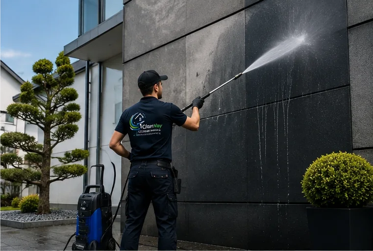
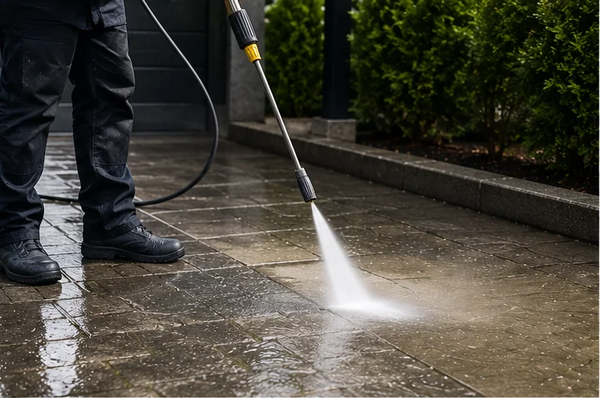
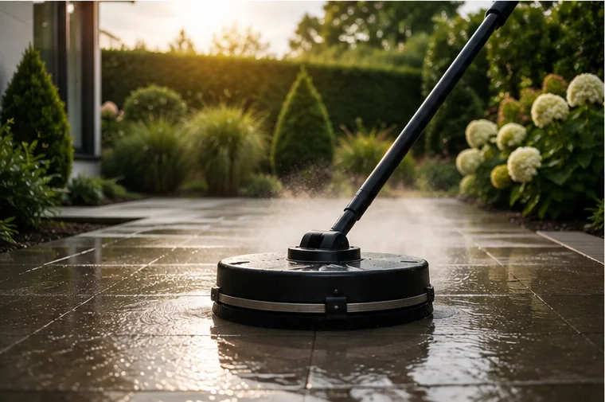
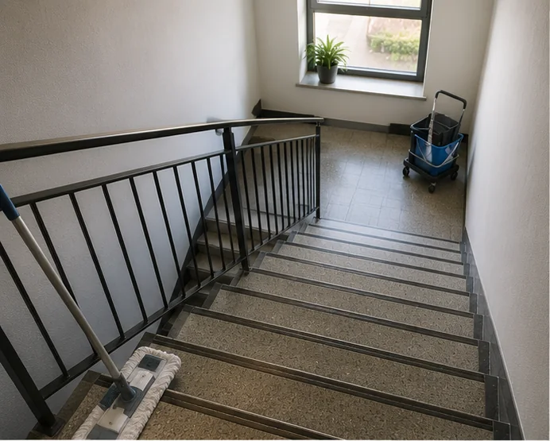
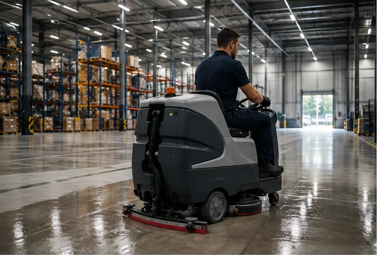
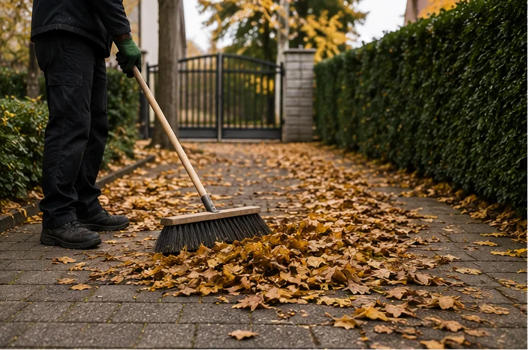
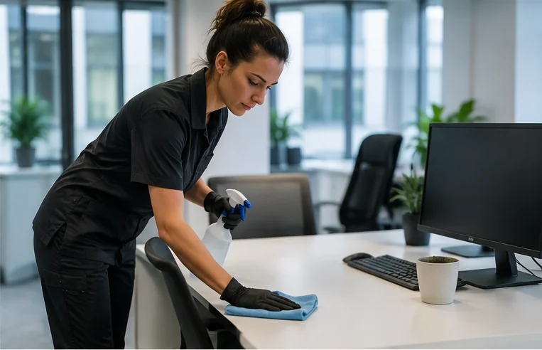
Der Unterschied
Ziehen Sie den Glasregler über das Bild: links der Zustand vor der Reinigung, rechts das Ergebnis – dieselbe Fläche, derselbe Blickwinkel.
Warum ClearWay
Der Unterschied liegt in der Arbeitsweise. Diese sechs Punkte bekommen Sie bei uns ohne Aufpreis dazu – bei jedem Einsatz.
Vereinbarte Termine werden gehalten. Wenn sich etwas verschiebt, erfahren Sie es von uns – nicht umgekehrt.
Kanten, Rahmen, Ecken und Handläufe gehören für uns selbstverständlich dazu – nicht nur die Fläche in der Mitte.
Vor dem ersten Einsatz klären wir Umfang, Intervall und Zugang. Sie wissen genau, was gemacht wird – und was es kostet.
Reinigung außerhalb der Bürozeiten, samstags oder passend zur Kehrwoche – wir richten uns nach Ihrem Objekt.
Naturstein, Glas, Holz oder beschichtete Böden: Mittel und Verfahren wählen wir passend zum Material, nicht pauschal.
Unser Team arbeitet in einheitlicher Arbeitskleidung, geht respektvoll mit Bewohnern um und hinterlässt den Einsatzort ordentlich.
So läuft es ab
Kein komplizierter Prozess: Sie melden sich, wir schauen uns das Objekt an, und danach wissen beide Seiten genau, woran sie sind.
Sie beschreiben kurz Objekt und Wunschleistung – über die Kontaktseite oder telefonisch. Die Anfrage ist kostenlos und unverbindlich.
Bei Bedarf sehen wir uns die Flächen vor Ort an. So können wir Aufwand, Material und Zugang realistisch einschätzen.
Sie erhalten ein klares Angebot mit Leistungsumfang und Preis. Keine versteckten Positionen, keine Überraschungen.
Wir legen gemeinsam Termin oder Intervall fest – auch außerhalb Ihrer Geschäftszeiten oder abgestimmt auf die Hausordnung.
Unser Team führt die Reinigung sorgfältig durch und hinterlässt die Flächen so, wie Sie sie sich wünschen.
Auf Wunsch übernehmen wir Ihr Objekt dauerhaft – mit festem Rhythmus und einem Ansprechpartner, der es kennt.
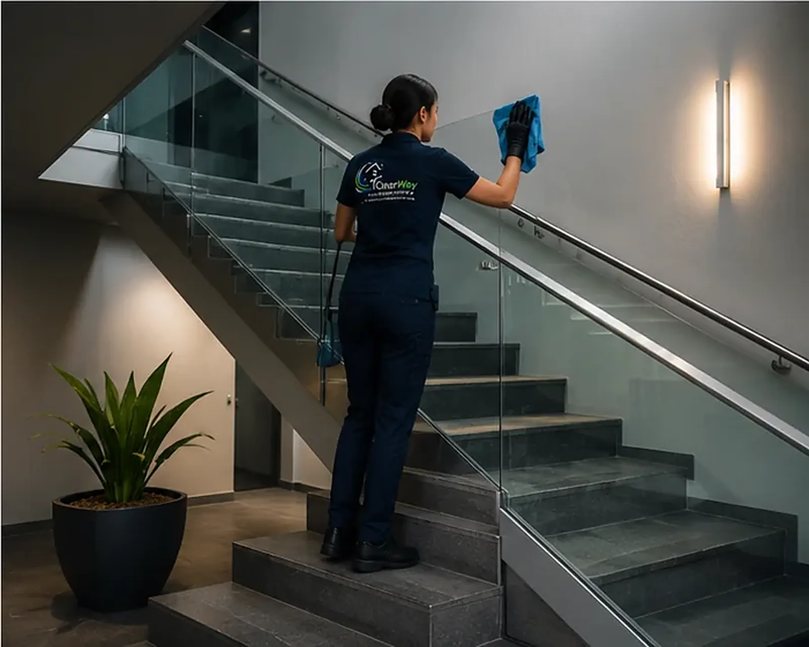
Für wen wir arbeiten
Wohnanlage, Büro oder privates Zuhause – jede Immobilie hat eigene Anforderungen an Reinigung und Pflege. Wir kennen sie.
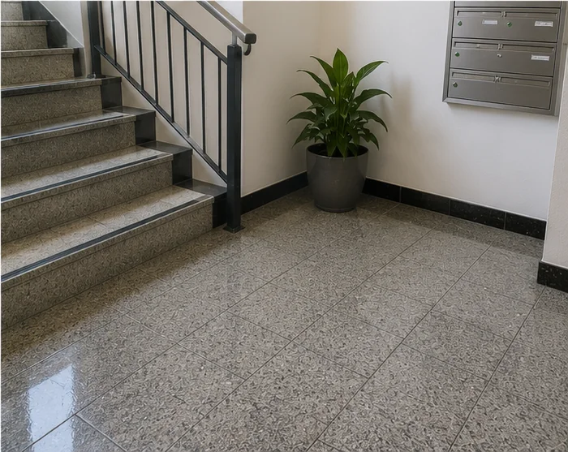
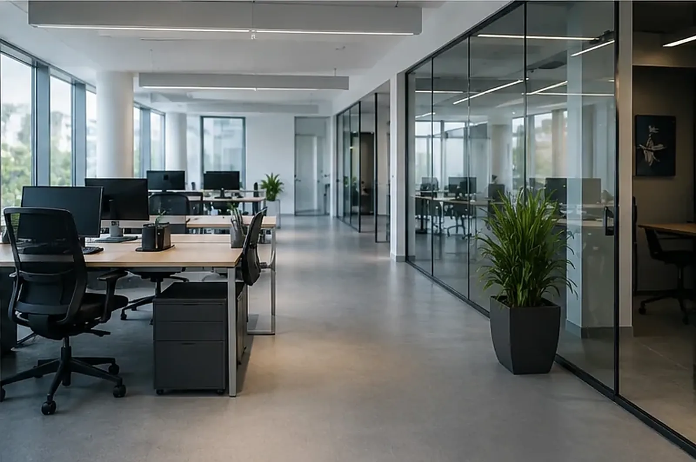
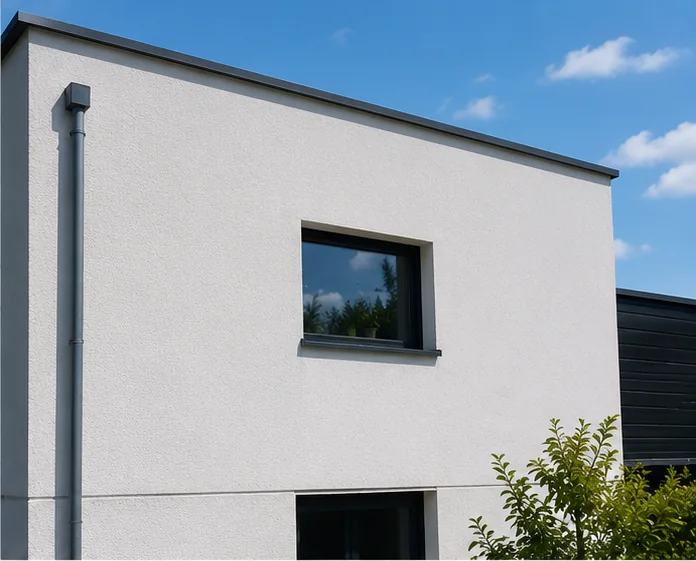
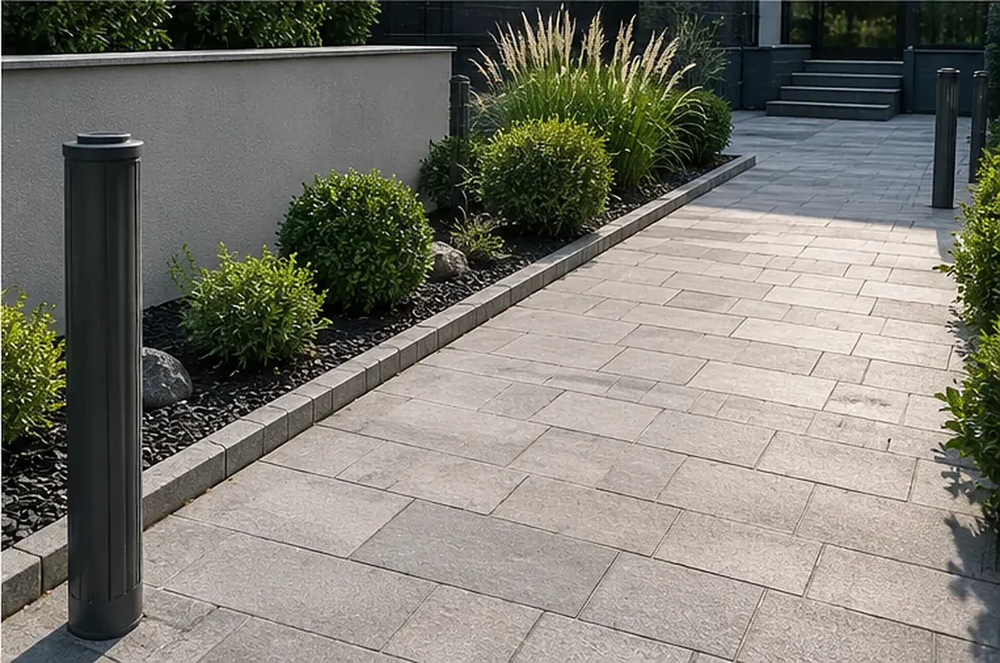
Unser Team
Hinter ClearWay steht ein eingespieltes Team, das sein Handwerk versteht und Ihr Objekt mit der gleichen Sorgfalt behandelt wie das eigene Zuhause.
Sie erreichen uns direkt, ohne Warteschleife und ohne anonymes Callcenter. Wer bei Ihnen reinigt, kennt Ihr Objekt und Ihre Absprachen.
Mehr über uns erfahrenHäufige Fragen
Wir betreuen Wohnanlagen, Mehrfamilienhäuser, Büros, Geschäfte, Gewerbeflächen und private Immobilien in Ludwigsburg und Umgebung. Ob Ihr Objekt dabei ist, klären wir gern in einem kurzen Gespräch.
Ja. Viele Kunden lassen Treppenhäuser, Büros oder Außenanlagen wöchentlich, vierzehntägig oder monatlich betreuen. Das Intervall legen wir gemeinsam fest und passen es an, wenn sich Ihr Bedarf ändert.
Ja. Fensterreinigung vor einem Anlass, Terrassenreinigung im Frühjahr oder eine Grundreinigung nach Renovierung – auch einzelne Einsätze führen wir gern durch.
Der Preis richtet sich nach Fläche, Verschmutzungsgrad, Zugänglichkeit und gewünschtem Intervall. Nach einer kurzen Besichtigung oder Ihren Angaben erhalten Sie ein klares Angebot – ohne versteckte Positionen.
Ja, und bei größeren Objekten empfehlen wir sie sogar. So sehen wir Flächen, Materialien und Zugänge selbst und können verbindlich kalkulieren.
Ja. Für Büros, Geschäfte und Gewerbeobjekte übernehmen wir die Unterhaltsreinigung ebenso wie Glas-, Boden- oder Außenflächen – auf Wunsch außerhalb Ihrer Geschäftszeiten.
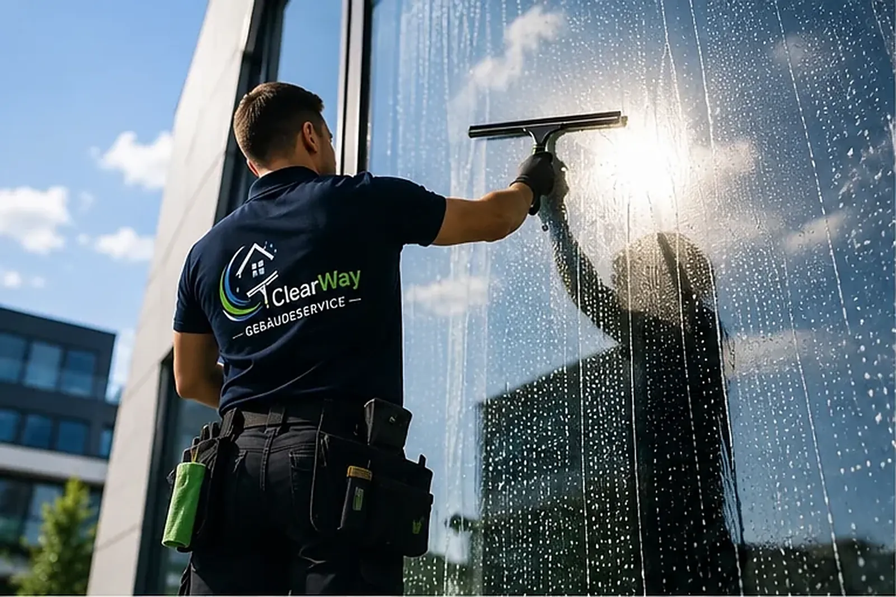
Beschreiben Sie uns kurz Ihr Objekt – Sie erhalten zeitnah eine ehrliche Einschätzung und ein klares Angebot.